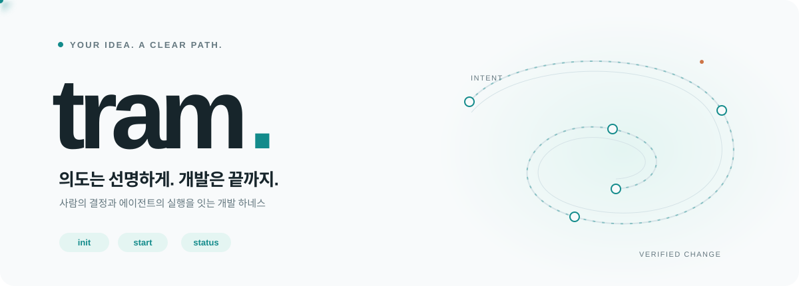
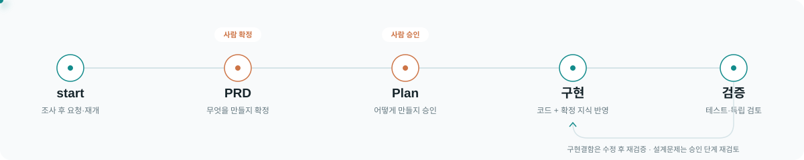
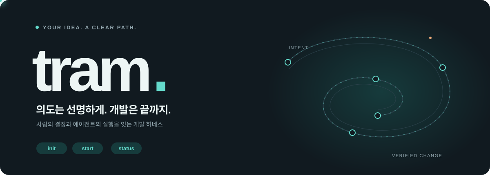
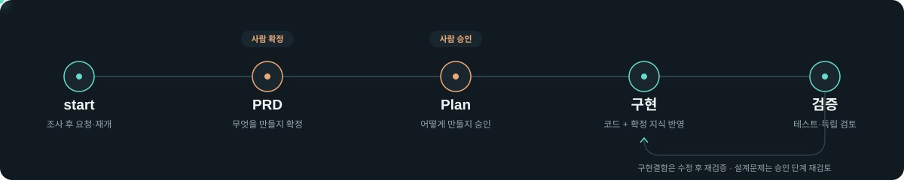

Tram README — 밝은 테마와 어두운 테마LIGHT / 밝은 테마

후보 0.0.1 / schema 2 · Codex·Claude Code 공개 alpha 준비 · Python 3.10+
설치 · 시작하기 · 작업 흐름 · 문서
한 번 요청하고, 두 번 결정합니다.
에이전트가 프로젝트 코드·문서·지식을 먼저 조사하고, 미확정 결정만 질문합니다.
PRD 확정과 Plan 승인은 나뉘며, 구현 뒤 확정 지식을 문서에 반영하고 검증합니다.

DARK / 어두운 테마

후보 0.0.1 / schema 2 · Codex·Claude Code 공개 alpha 준비 · Python 3.10+
설치 · 시작하기 · 작업 흐름 · 문서
한 번 요청하고, 두 번 결정합니다.
에이전트가 프로젝트 코드·문서·지식을 먼저 조사하고, 미확정 결정만 질문합니다.
PRD 확정과 Plan 승인은 나뉘며, 구현 뒤 확정 지식을 문서에 반영하고 검증합니다.
